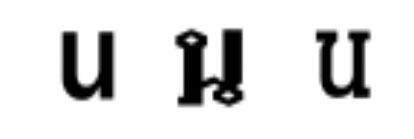

자음편
| 번호 | 철자 | 발음 | 읽기 및 뜻 | 초성 | 종성 | 글자체의 변형 예 |
|---|---|---|---|---|---|---|
| 1 | ก | 꺼- | 꺼-까이 : 닭 | ㄲ | ㄱ | |
| 2 | ข | 커- | 커-카이 : 계란 | ㅋ | ㄱ |  |
| 3 | ฃ | 커- | 커-쿠-얻 - : 병(사용 안함) | ㅋ | ㄱ | |
| 4 | ค | 커- | 커-콰-이 : 물소 | ㅋ | ㄱ | |
| 5 | ฅ | 커- | 커-콘 - : 사람(사용 안함) | ㅋ | ㄱ | |
| 6 | ฆ | 커- | 커-라캉 : 종 | ㅋ | ㄱ | |
| 7 | ง | 응어 | 응어-응우- : 뱀 | ㅇ | ㅇ | |
| 8 | จ | 쩌- | 쩌-짠- : 접시 | ㅉ | ㅅ | |
| 9 | ฉ | 처- | 처-칭 : 징 | ㅊ | - |  |
| 10 | ช | 처- | 처-창- : 코끼리 | ㅊ | ㅅ | |
| 11 | ซ | 써- | 써-쏘- : 쇠사슬 | ㅆ | ㅅ | |
| 12 | ฌ | 처- | 처-처- : 나무 이름 | ㅊ | - | |
| 13 | ญ | 여- | 여-잉 : 여자 | y | ㄴ | |
| 14 | ฎ | 더- | 더-차다- : 무용 왕관 | ㄷ | ㄷ | |
| 15 | ฏ | 떠- | 떠-빠딱 : 장대 | ㄸ | ㄷ | |
| 16 | ฐ | 터- | 터-탄- : 받침대 | ㅌ | ㄷ | |
| 17 | ฑ | 터- | 터-몬토- : 여자 이름 | ㅌ | ㄷ |  |
| 18 | ฒ | 터- | 터-푸-타-오 : 노인 | ㅌ | ㄷ | |
| 19 | ณ | 너- | 너-넨- : 사미승 | ㄴ | ㄴ | |
| 20 | ด | 더- | 더-덱 : 어린이 | ㄷ | ㄷ | |
| 21 | ต | 떠- | 떠-따-오 : 거북이 | ㄸ | ㄷ |  |
| 22 | ถ | 터- | 터-퉁 : 봉지 | ㅌ | ㄷ | |
| 23 | ท | 터- | 터-타한- : 군인 | ㅌ | ㄷ | |
| 24 | ธ | 터- | 터-통 : 기,깃발 | ㅌ | ㄷ | |
| 25 | น | 너- | 너-누- : 쥐 | ㄴ | ㄴ |  |
| 26 | บ | 버- | 버-바이마-이 : 나무잎 | ㅂ | ㅂ | |
| 27 | ป | 뻐- | 뻐-쁠라- : 물고기 | ㅃ | ㅂ | |
| 28 | ผ | 퍼- | 퍼-픙 : 벌 | ㅍ | - | |
| 29 | ฝ | 훠(f)- | 훠(f)-화(f)- : 뚜껑 | ㅎ(f) | - | |
| 30 | พ | 퍼- | 퍼-판- : 쟁반 | ㅍ | ㅂ | |
| 31 | ฟ | 훠(f)- | 훠(f)-환(f) : 치아 | ㅎ(f) | ㅂ | |
| 32 | ภ | 퍼- | 퍼-쌈파오 : 돛배 | ㅍ | ㅂ | |
| 33 | ม | 머- | 머-마- : 말 | ㅁ | ㅁ | |
| 34 | ย | 여- | 여-약 : 도깨비 | y | 이 | |
| 35 | ร | 러- | 러-르-아 : 배 | ㄹ(R) | ㄴ | |
| 36 | ล | 러- | 러-링 : 원숭이 | ㄹ(L) | ㄴ | |
| 37 | ว | 워- | 워-왠- : 반지 | W | 우 | |
| 38 | ศ | 써- | 써-쌀-라- : 정자 | ㅆ | ㅅ | |
| 39 | ษ | 써- | 써-르씨 : 수도자,도인 | ㅆ | ㅅ | |
| 40 | ส | 써- | 써-쓰-아 : 호랑이 | ㅆ | ㅅ | |
| 41 | ห | 허- | 허-힙- : 상자 | ㅎ | - | |
| 42 | ฬ | 러- | 러-쭐라- : 연 이름 | ㄹ(L) | ㄴ | |
| 43 | อ | 어- | 어-앙- : 대야 | ㅇ | - | |
| 44 | ฮ | 허- | 허-녹훅- : 부엉이 | ㅎ | - |
모두 21개의 발음을 44개의 자음으로 표현하고 있기 때문에 같은 발음에 여러 개의 자음이 있는 것도 있습니다. 예를 들어 'ㅌ' 발음이 나는 것은 모두 6개입니다.
2. 발음시 주의 사항
1) L 발음(ล 와 ฬ)은 혀를 위쪽 잇몸에 대고 발음하면 되니 쉽습니다. 그러나 R 발음(ร,ฤ)은 입천장 주변에 혀를 굴리면서 소리를 냅니다.
2) 7번 'ง' 발음은 한글에는 없는 단어입니다. '응어'라는 발음이 유사하지만, 앞의 '응'자는 아주 약하고 짧게 하면서 소리는 목구멍으로 내는 것이 아니고, 코를 울리면서 내는 콧소리입니다.
3) 3번 'ฃ' 와 5번 'ฅ' 는 지금은 사용하지 않는 철자입니다.
4) '글자체의 변형 예'는 주로 광고용 간판이나 신문 타이틀 등에 사용되는 글씨체로 대표적인 것 3가지만 예를 들었습니다. 그 외에도 예를 든 글씨체와 유사한 글씨체들이 많으니 참고하시기 바랍니다.
5) 글자를 쓸 때는 좌에서 우로, 그리고 작은 동그라미가 있는 경우 그 것 부터 시작합니다. 3글자(ศ,ษ,ส)를 제외하고는 모두 끊지 않고 연결하여 써야 합니다.